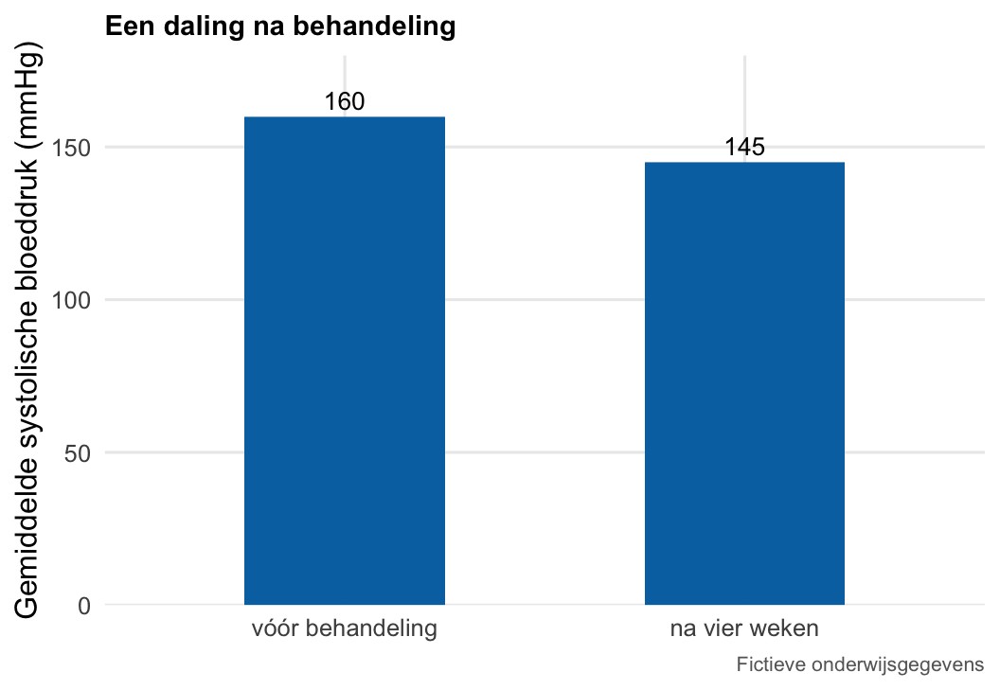
1 Basis van Gezondheid en Ziekte
Welkom bij het statistiek deel van het vak Basis van Gezondheid en Ziekte (BvGZ)! In dit deel maak je voor het eerst kennis met statistiek in de geneeskunde en ontdek je hoe je statistiek kunt gebruiken om medische gegevens te begrijpen.
Als arts kom je dagelijks gegevens tegen: bloedwaarden, meetresultaten en onderzoek naar nieuwe behandelingen. Statistiek helpt je deze gegevens te beschrijven en te interpreteren, zodat je ze kunt gebruiken bij het beoordelen van de gezondheid van patiënten en het nemen van medische beslissingen.
We beginnen met het leren lezen en beschrijven van gegevens. Voordat je conclusies kunt trekken, moet je immers eerst patronen herkennen en deze helder kunnen uitleggen. Zo leer je medische informatie kritisch te beoordelen en hierover met patiënten en collega’s te communiceren.
We beginnen met de leerdoelen waarop ons onderwijs is gebaseerd. Daarna volgt het naslagwerk, waarin je alles kunt terugvinden wat tijdens de hoorcolleges en werkcolleges wordt behandeld.
Tot slot willen we benadrukken dat statistiek een belangrijk hulpmiddel is in de wetenschappelijke gereedschapskist van een arts. Maar, je leert statistiek niet alleen door de theorie te bestuderen, maar vooral door deze herhaaldelijk toe te passen en te blijven oefenen. Dat kan in het begin best lastig zijn en soms frustratie opleveren. Dat is een normaal onderdeel van het leerproces. Door te oefenen, fouten te maken en hiervan te leren, ontwikkel je stap voor stap je vaardigheden (Nelson & Eliasz, 2023).
Veel leerplezier!
1.1 Leerdoelen
De student kan beschrijvende statistiek, tabellen en grafieken gebruiken om data samen te vatten en de belangrijkste patronen, verschillen en trends te herkennen.
Deelleerdoelen
- Het verschil uitleggen tussen beschrijvende statistiek (data samenvatten) en inferentiële statistiek (conclusies trekken over een populatie).
- Maten van centrale tendentie (gemiddelde, mediaan, modus) en spreiding (spreidingsbreedte, standaarddeviatie) benoemen en toepassen op een eenvoudige dataset.
- Verschillende typen grafieken (staafdiagram, histogram, boxplot, spreidingsdiagram/lijngrafiek) herkennen en aangeven welk type bij welk soort data past.
- Een grafiek of tabel uit een wetenschappelijk artikel correct aflezen (wat staat er op de assen, wat betekenen foutbalken).
- Veelvoorkomende valkuilen in grafische weergave herkennen (bijv. afgesneden y-as, misleidende schaal, verwarring tussen absolute en relatieve getallen).
1.2 Statistiek in de geneeskunde
In de geneeskunde kom je voortdurend samenvattingen van gegevens tegen: een gemiddelde in een artikel, een daling in een figuur, een percentage in een abstract. Die getallen helpen je om patronen te zien, maar ze vertellen niet automatisch het hele verhaal. Een daling in een figuur bewijst bijvoorbeeld nog niet dat een behandeling werkt, en één gemiddelde beschrijft nog niet hoe sterk patiënten onderling verschillen.
In dit naslagwerk oefen je daarom vooral om te kijken: wat is er gemeten, hoe is dat samengevat, welk patroon zie je, en welke informatie ontbreekt nog?
Die daling alleen bewijst niet dat de behandeling werkt. Er ontbreekt onder meer een vergelijkingsgroep, informatie over spreiding tussen patiënten, en zekerheid dat het verschil niet door tijd of andere zorg komt. Eerst beschrijf je wat je ziet. Daarna pas trek je voorzichtig een conclusie.
Beschrijven en conclusies trekken
Allereerst beschrijven we gegevens met kengetallen, zoals een centrummaat (gemiddelde of mediaan) en een spreidingsmaat (standaarddeviatie of interkwartielafstand), en met tabellen of figuren. Dit noemen we beschrijvende statistiek. Zo’n samenvatting geldt voor de gegevens die je hebt gemeten, oftewel voor je steekproef. Door die steekproef samen te vatten zie je sneller wat er in jouw gegevens gebeurt.
Inferentiële statistiek gaat een stap verder. Daarmee gebruik je een steekproef om iets te zeggen over een bredere populatie, bijvoorbeeld met een schatting, een betrouwbaarheidsinterval of een toets. Dat vraagt om een passende onderzoeksopzet en aannames. In dit vak oefenen we vooral beschrijven en lezen.
Een gemiddelde wachttijd van vier minuten in jouw steekproef bewijst dus niet dat alle patiënten in het ziekenhuis gemiddeld vier minuten wachten. Het vat alleen de gemeten gegevens samen.
Type gegevens
In onderzoek komen verschillende soorten gegevens voor, denk aan bloedwaarden, wachttijden, type spreekuur of antwoorden op een vragenlijst. Een variabele is een kenmerk dat je meet of registreert. Grofweg onderscheiden we categorische en numerieke variabelen. Dat onderscheid bepaalt hoe je samenvat en visualiseert, en later ook welke toets past.
| Soort gegevens | Voorbeeld | Samenvatting |
|---|---|---|
| Categorisch | Type spreekuur, geslacht | Aantal en percentage |
| Numeriek | Wachttijd, leeftijd | Centrum en spreiding |
Categorisch. Je telt hoe vaak elke categorie voorkomt. Bijvoorbeeld: 22 van 40 patiënten hebben een urgent spreekuur (\(22/40 = 55\%\)). Een percentage is geen aantal, dus noem altijd de noemer erbij.
Twee categorische variabelen vat je samen in een kruisstabel (aantallen per combinatie):
| Urgent | Regulier | Totaal | |
|---|---|---|---|
| Vrouw | 12 | 10 | 22 |
| Man | 10 | 8 | 18 |
| Totaal | 22 | 18 | 40 |
Hieruit lees je bijvoorbeeld: 12 van de 22 vrouwen (55%) hadden een urgent spreekuur, en 22 van de 40 patiënten (55%) overall.
Numeriek. De waarden zijn getallen waarmee je kunt rekenen. Je beschrijft meestal centrum en spreiding van de verdeling. Binnen numerieke gegevens onderscheiden we verder:
- Continu: binnen het passende interval zijn in principe alle waarden mogelijk (binnen de meetprecisie). Voorbeelden: wachttijd in minuten, bloeddruk in mmHg, lengte of leeftijd. Tussen 3 en 4 minuten bestaan ook 3,2 of 3,75 minuten.
- Discreet: alleen bepaalde, telbare waarden. Voorbeelden: aantal bezoeken, aantal kinderen, of een score op een Likertschaal van 1 tot 5. Ouders kunnen bijvoorbeeld geen 2,5 kind hebben.
Beide typen zijn numeriek en kun je met gemiddelde of mediaan samenvatten. Het onderscheid helpt vooral bij visualisatie: een histogram past goed bij continue gegevens, terwijl je bij weinig discrete waarden soms losse staven ziet. Later speelt dit ook mee bij de keuze van een toets.
Centrummaten
Je kent waarschijnlijk al het idee van een gemiddelde. Misschien ken je ook de mediaan, of de modus? Een lijst losse metingen is lastig te overzien. Een centrummaat (ook wel locatiemaat) vat die lijst samen in één getal dat aangeeft waar de gegevens typisch liggen: “ongeveer hoeveel?” of “wat komt het meest voor?”. Zo kun je groepen of meetmomenten vergelijken zonder elke individuele waarde te bekijken. Denk aan de typische wachttijd op de poli, of de meest voorkomende klacht. Welke centrummaat past, hangt af van het type gegevens en van uitschieters.
Gemiddelde, mediaan, modus
Op dezelfde dataset kun je drie centrummaten berekenen. Neem vijf wachttijden van 2, 3, 3, 4 en 8 minuten.
| Maat | Hoe bepaal je die? | Uitkomst |
|---|---|---|
| Gemiddelde | Som gedeeld door aantal waarnemingen: \((2+3+3+4+8)/5\) | 4 min |
| Mediaan | Middelste waarde na ordenen | 3 min |
| Modus | Meest voorkomende waarde | 3 min |
Bij een even aantal waarden is er geen enkele middelste. Neem dan het gemiddelde van de twee middelste na ordenen: bij 2, 3, 4, 8 is de mediaan \((3+4)/2 = 3{,}5\) minuten.
De modus is de meest voorkomende waarde. Komt elke waarde even vaak voor, dan is er geen modus. Komen twee of meer waarden even vaak en vaker voor dan de rest, dan zijn er meerdere modi: bij 2, 2, 5, 5, 8 zijn zowel 2 als 5 modus. Bij categorische gegevens kun je alleen de modus als centrummaat gebruiken, omdat gemiddelde en mediaan daar niet gedefinieerd zijn. Als “regulier” vaker voorkomt dan “urgent”, is regulier de modus.
Uitschieters
Een extreme waarde beïnvloedt niet alle centrummaten even sterk. Neem opnieuw de reeks 2, 3, 3, 4, 8 (gemiddelde 4, mediaan 3, modus 3) en vervang 8 door 28, dus 2, 3, 3, 4, 28:
- som wordt 40, gemiddelde wordt 8;
- mediaan en modus blijven 3.
Alle waarden beïnvloeden het gemiddelde, omdat elke observatie in de som meetelt. De mediaan hangt alleen af van de middelste rangpositie na ordenen. Zolang die middelste waarde(n) hetzelfde blijven, verandert de mediaan niet als je een uiterste groter of kleiner maakt. Daarom is de mediaan robuuster tegen uitschieters dan het gemiddelde.
Let op: een hoge waarde is niet automatisch een fout, en mag niet zonder reden worden verwijderd. Of je gemiddelde of mediaan rapporteert, hangt af van je vraag en van de verdeling van de gegevens.
Spreidingsmaten
Een centrummaat zegt waar de gegevens ongeveer liggen, maar niet hoe ver ze uiteenlopen. Twee groepen met hetzelfde gemiddelde of dezelfde mediaan kunnen toch heel anders zijn. In de ene groep liggen bijna alle waarden dicht bij het centrum, in de andere lopen ze sterk uiteen. Die onderlinge verschillen doen er klinisch toe. Denk aan een gemiddelde bloeddruk die “goed” lijkt, terwijl individuele patiënten sterk variëren. Daarom voeg je naast een centrummaat een spreidingsmaat toe.
Spreidingsbreedte
Hoe geef je de spreiding van een verdeling weer in een paar getallen? De eenvoudigste maat is de spreidingsbreedte: maximum − minimum. Bij 2, 3, 3, 4, 8 is dat \(8 - 2 = 6\) minuten.
Deze maat gebruikt alleen de twee uitersten en is gevoelig voor uitschieters. Vervang je 8 door 28, dan wordt de breedte 26. Schrijf desgewenst ook minimum en maximum apart op. Dan zie je niet alleen hoe breed het interval is, maar ook waar het ligt.
De spreidingsbreedte geeft een snelle eerste indruk van het bereik: “hoe ver lopen de waarden uiteen?” Dat kan nuttig zijn bij labreferenties, of als je wilt weten of alle metingen binnen een klinisch relevant interval vallen. Voor een stabielere samenvatting van spreiding in een steekproef zijn standaarddeviatie of IQR meestal informatiever, omdat die niet alleen van twee extreme punten afhangen.
Standaarddeviatie
De standaarddeviatie beschrijft hoe ver waarnemingen rond het gemiddelde uiteenliggen, in dezelfde eenheid als de metingen. We gebruiken hier de eenvoudige formule met delen door \(n\). Elke meting heeft een afwijking tot het gemiddelde: het verschil tussen die waarde en het gemiddelde.
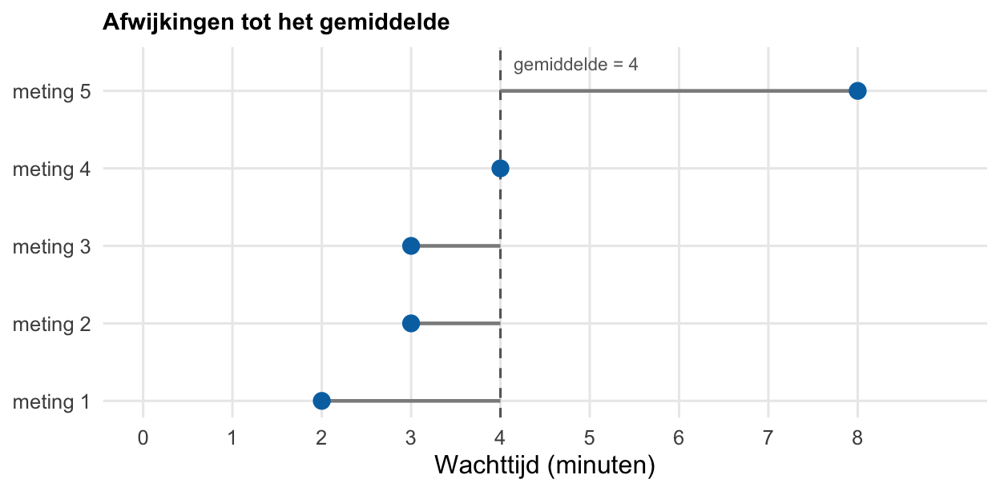
Voor wachttijden 2, 3, 3, 4, 8 (gemiddelde 4):
- afwijkingen van het gemiddelde: −2, −1, −1, 0, 4;
- gekwadrateerde afwijkingen: 4, 1, 1, 0, 16 (som = 22);
- standaarddeviatie: \(\sqrt{22 / 5} \approx 2{,}10\) minuten.
Positieve en negatieve afwijkingen heffen elkaar zo niet op. Bij standaarddeviatie = 0 zijn alle waarden gelijk. Let op: gemiddelde ± standaarddeviatie is geen minimum en maximum. De standaarddeviatie beschrijft verschillen tussen waarnemingen, niet de onzekerheid van het gemiddelde.
Interkwartielafstand (IQR)
Kwartielen verdelen een geordende reeks in vier even grote delen, elk met 25% van de waarnemingen:
- \(Q_1\) (eerste kwartiel): 25% van de waarden is kleiner of gelijk aan \(Q_1\);
- \(Q_2\) (tweede kwartiel): dat is de mediaan; 50% ligt eronder;
- \(Q_3\) (derde kwartiel): 75% van de waarden is kleiner of gelijk aan \(Q_3\).
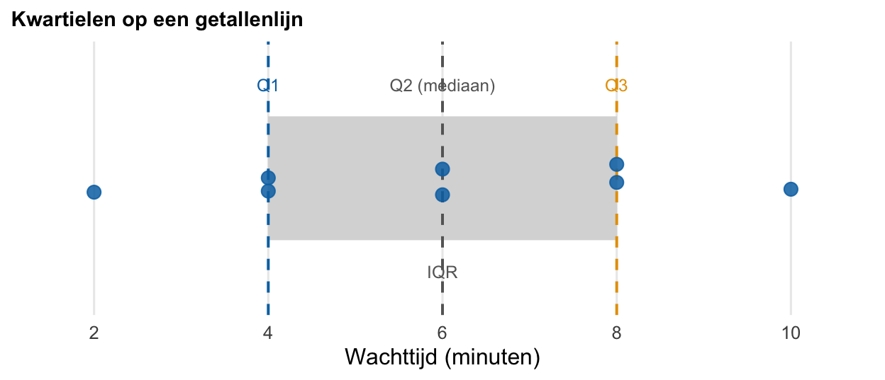
De interkwartielafstand (IQR, van interquartile range) is het verschil tussen het derde en het eerste kwartiel: \(\mathrm{IQR} = Q_3 - Q_1\). Die breedte beslaat de middelste 50% van de gegevens.
Voorbeeld: 2, 4, 4, 6, 6, 8, 8, 10 minuten. Mediaan (\(Q_2\)) = 6, \(Q_1\) = 4, \(Q_3\) = 8, dus \(\mathrm{IQR} = 8 - 4 = 4\) minuten. De IQR is dus een breedte. De grenzen van dat middelste deel zijn \(Q_1\) en \(Q_3\) zelf.
Omdat de uitersten buiten de middelste helft vallen, is de IQR robuuster tegen uitschieters dan de spreidingsbreedte of de standaarddeviatie. In een boxplot zie je de IQR terug als de breedte van de box.
Gemiddelde en standaarddeviatie, waarom beide?
Waarom rapporteren we vaak zowel een centrummaat als een spreidingsmaat? Twee groepen kunnen hetzelfde gemiddelde hebben en toch heel anders verspreid zijn. Stel dat beide groepen gemiddeld 6 minuten wachten, maar groep A heeft standaarddeviatie ≈ 1,4 en groep B ≈ 2,8. Alleen het gemiddelde vertelt dan niet hoe groot de onderlinge verschillen zijn. Daarvoor heb je ook een spreidingsmaat nodig.
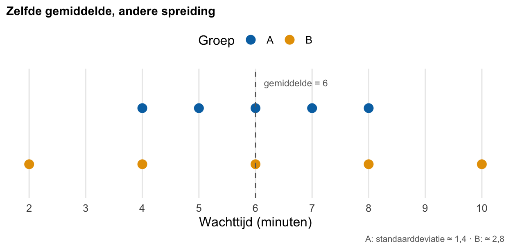
Welke grafiek?
Overzicht
Het type figuur moet passen bij de gegevens én bij de vraag die je wilt beantwoorden. Kies daarom eerst wat je wilt laten zien, en daarna een passend grafiektype. Bedenk ook: een grafiek vat samen en kan informatie weglaten.
| Wat wil je zien? | Passende grafiek |
|---|---|
| Categorieën vergelijken | Staafdiagram |
| Verdeling van een numerieke variabele | Histogram of boxplot |
| Verband tussen twee numerieke variabelen | Spreidingsdiagram |
| Verloop over de tijd | Lijngrafiek |
Een verdeling gaat over de waarden van één variabele. Een verband gaat over hoe twee variabelen samen variëren.
Staafdiagram en histogram
Een staafdiagram gebruik je om categorieën te vergelijken. Elke balk is één groep, bijvoorbeeld urgent of regulier spreekuur. De hoogte is meestal een aantal of percentage. Tussen de balken zit vaak ruimte, en de volgorde op de x-as mag je kiezen: alfabetisch, van groot naar klein, of een vaste klinische volgorde.
Een histogram toont de verdeling van één numerieke variabele. Je deelt de getallenas in aaneengesloten intervallen (klassen of bins), bijvoorbeeld wachttijd 0–<2, 2–<4, 4–<6 minuten, en telt hoeveel metingen in elke klasse vallen. De x-as is dus een getallenschaal. De volgorde ligt vast, en aangrenzende klassen raken elkaar. Er zitten geen gaten tussen de balken.
Het verschil met een staafdiagram is belangrijk. Labels zoals “urgent” en “regulier” zijn geen afstanden op een meetlat. Balken tegen elkaar zetten bij categorieën maakt er nog geen histogram van. Een histogram is ook geen tijdsverloop: de x-as is de gemeten waarde (wachttijd), niet “week 1, week 2”.
In ons voorbeeld vallen de wachttijden 2, 3, 3, 4, 8 zo in klassen van 2 minuten: drie metingen in 2–<4, één in 4–<6, één in 8–<10. Bij gelijke klassebreedten mag de balkhoogte het aantal voorstellen. Zijn de breedten ongelijk, dan gebruik je frequentiedichtheid (aantal gedeeld door breedte). Niet de hoogte, maar het oppervlak van de balk geeft dan het aantal weer.
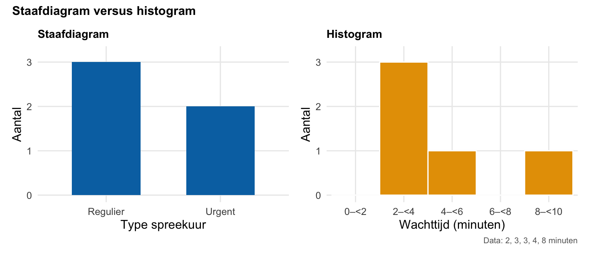
Boxplot
Een boxplot vat een numerieke verdeling samen met kwartielen. De figuur tekent \(Q_1\), mediaan en \(Q_3\) als een rechthoek met een streep ertussen, plus snorren naar de uiteinden. Neem opnieuw de wachttijden 2, 4, 4, 6, 6, 8, 8, 10:
- de box loopt van \(Q_1\) tot \(Q_3\) (hier 4 tot 8; de breedte is de IQR);
- de lijn in de box is de mediaan (\(Q_2\) = 6);
- de snorren (lijnen buiten de box) reiken in dit voorbeeld tot minimum 2 en maximum 10.
In andere figuren stoppen snorren vaak bij de uiterste waarde binnen \(1{,}5\times\mathrm{IQR}\) van de box. Verder wegliggende punten staan dan los als uitschieters. Lees daarom altijd het bijschrift. Min/max-snorren en \(1{,}5\times\mathrm{IQR}\)-snorren betekenen iets anders.
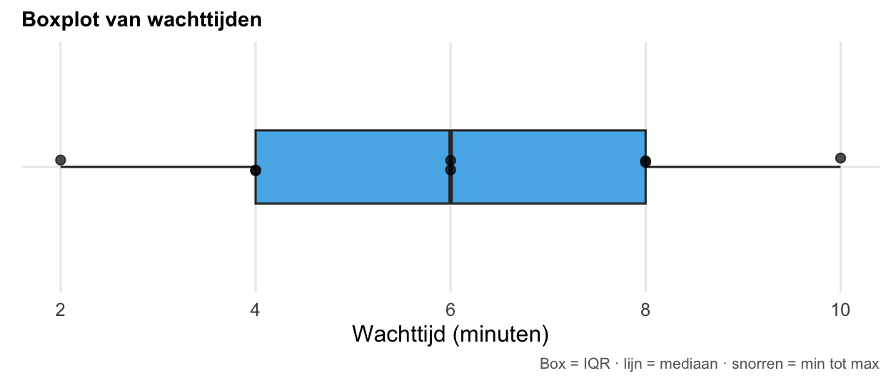
Spreidingsdiagram
Om te kijken of twee numerieke variabelen samenhangen, gebruik je een spreidingsdiagram. Ieder punt stelt meestal één waarneming voor, bijvoorbeeld leeftijd en bloeddruk van één persoon. Je ziet zo of er een verband is: stijgen de y-waarden mee als x toeneemt? Een samenhang in de figuur bewijst nog geen oorzakelijk verband. Verbind losse personen ook niet met een lijn alsof het opeenvolgende momenten van dezelfde persoon zijn.
Lijngrafiek
Een lijngrafiek toont vaak een groepsgemiddelde of andere samenvatting over meetmomenten in de tijd. Eén punt is dan een groepswaarde op één tijdstip, geen individuele patiënt. De lijn helpt het verloop te volgen. Controleer wel of de tijd op de x-as op ware schaal staat. Daarover later meer bij schaal op de assen.
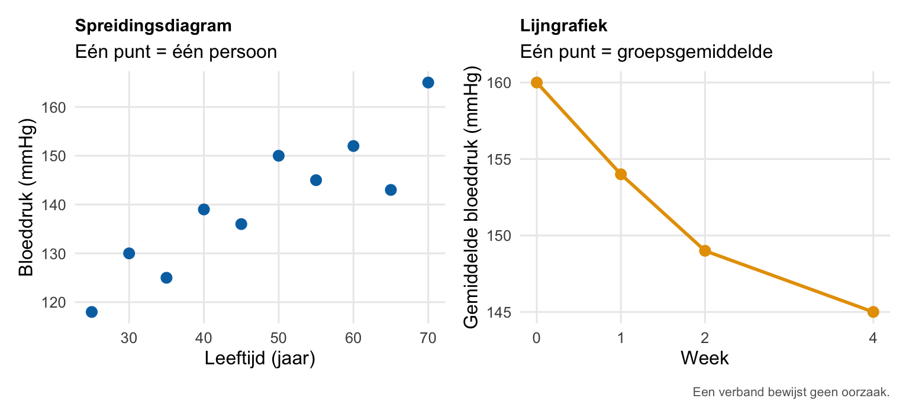
Hoe lees ik een onderzoek?
In een artikel of abstract staan vaak veel bevindingen en getallen dicht op elkaar. Begin daarom niet meteen bij zin 1 om alles achter elkaar te lezen. Werk liever in twee stappen.
- Scannen / oriënteren. Kijk eerst snel door de tekst, tabellen en figuren heen. Wie zijn onderzocht (patiënten, \(n\))? Wat is gemeten (uitkomst, eenheid)? Wanneer of hoe lang is gemeten? Welke groepen of behandelingen worden vergeleken?
- Gericht lezen. Zoek daarna de tabel, zin of figuur die jouw vraag beantwoordt. Lees koppen, eenheden, voetnoten en bijschriften voordat je een conclusie trekt over een getal.
Pas als je het artikel echt wilt doorgronden, lees je het van begin tot eind. Dat kost veel tijd. Hieronder oefenen we dit scannen en gericht lezen apart voor tabellen, tekst en figuren.
Tabellen
Bij tabellen werk je meestal van buiten naar binnen: eerst titel en kolomkoppen, dan groepsnamen met \(n\), dan de rij die je vraag beantwoordt, en tot slot eenheid en voetnoot.
Voorbeeld. SPRINT (Systolic Blood Pressure Intervention Trial, NEJM 2015) vergeleek bij mensen met verhoogd cardiovasculair risico een intensieve bloeddrukbehandeling (streefwaarde systolisch <120 mmHg) met een standaard behandeling (streefwaarde <140 mmHg). Tabel 1 van zo’n artikel toont meestal uitgangskenmerken: hoe zagen de groepen eruit bij de start, vóór het effect van de behandeling?
Selectie uit die tabel:
| Intensief (\(n = 4678\)) |
Standaard (\(n = 4683\)) |
|
|---|---|---|
| Leeftijd, jaar | \(67{,}9 \pm 9{,}4\) | \(67{,}9 \pm 9{,}5\) |
| Vrouw, aantal (%) | 1684 (36,0) | 1648 (35,2) |
Voetnoot in het artikel: \(\pm\) staat hier voor gemiddelde met standaarddeviatie.
Wat kun je hieruit aflezen? Eerst de context: twee behandelarmen bij start. Daarna de groepsnamen op de kolommen met \(n\), en dan de rijen. Leeftijd staat als gemiddelde met standaarddeviatie. “Vrouw” staat als aantal met percentage. Op deze kenmerken lijken beide groepen bij aanvang vergelijkbaar beschreven: bijna dezelfde gemiddelde leeftijd en een vergelijkbaar aandeel vrouwen. Dat betekent nog niet dat de groepen “bewezen gelijk” zijn, en ook niet dat intensief beter werkt dan standaard. Die vragen beantwoordt deze beschrijvende starttabel niet.
Tekst
Lees eerst globaal wie, wat en wanneer, en zoek daarna de uitkomst en de vergelijking. Woorden zoals respectievelijk, vergeleken met, ten opzichte van, het verschil en echter helpen je oriënteren, maar vervangen nauwkeurig lezen niet.
Voorbeeld: bij behandeling A en B dalen de gemiddelde bloeddrukken met 15 en 10 mmHg. Het verschil tussen de groepen is 5 mmHg. Respectievelijk koppelt die getallen aan de eerdere volgorde: vijftien hoort bij A, tien bij B. Vijf is het verschil tussen de groepsgemiddelde dalingen. Het is niet de daling van één patiënt, en ook niet zomaar “het effect in de hele populatie” zonder verdere informatie. In artikelen staat bij zo’n verschil soms nog een interval of andere maat voor onzekerheid. Die leer je later preciezer lezen. Voor nu is de kernvraag: welk getal hoort bij welke groep, en wat beschrijft het verschil?
Figuren
Bij figuren helpt een vaste volgorde: eerst de assen, dan de legenda, daarna het verschil of patroon, en tot slot het bijschrift.
Let vooral op wat de y-as precies is. Staat er bijvoorbeeld verandering, dan betekent nul “geen verandering”, niet een bloeddruk van nul. Een groepsgemiddelde is bovendien geen individuele patiënt. En als er geen foutbalken staan, betekent dat nog niet dat er geen spreiding of onzekerheid is.
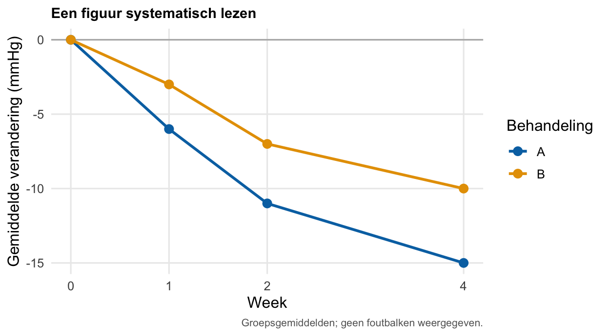
Wees scherp op
Foutbalken
Dezelfde gegevens kunnen er anders uitzien, afhankelijk van wat de foutbalk betekent. ± standaarddeviatie gaat over spreiding tussen waarnemingen: hoe sterk patiënten of metingen onderling verschillen. In figuren zie je soms ook ± SE (standaardfout, Engels: standard error). Dat is iets anders. De standaardfout zegt iets over de precisie van een geschat gemiddelde, niet over hoe homogeen de groep is. Een kortere standaardfout-balk betekent dus niet dat patiënten minder van elkaar verschillen.
Later in de opleiding komen standaardfout en betrouwbaarheidsintervallen uitgebreider aan bod. Voor nu is de boodschap: lees altijd het bijschrift voordat je een foutbalk interpreteert.
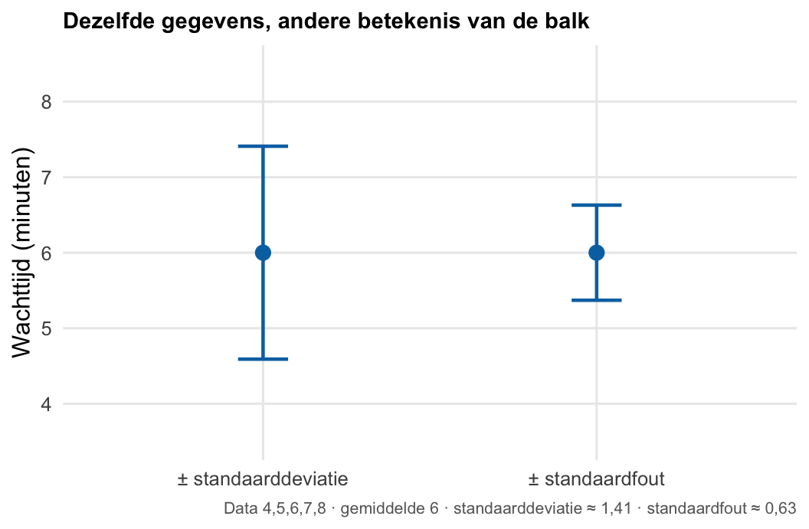
Afgesneden as
De y-as bepaalt hoe groot een verschil eruitziet. Neem twee groepsgemiddelden van 145 en 150 mmHg. Het echte verschil is 5 mmHg.
Begin je de y-as bij 0, dan zijn beide balken ongeveer even hoog en lijkt 5 mmHg klein ten opzichte van het totaal. Begin je bij 140, dan lijkt groep B “veel hoger” dan groep A, terwijl de getallen onveranderd zijn. De as is afgesneden: je ziet alleen het topje van de balken.
Bij staafdiagrammen vergelijken we vooral via balklengte. Daarom is een basis bij nul meestal eerlijker. Anders overdrijft de figuur relatieve verschillen. Bij een lijngrafiek kan inzoomen juist nuttig zijn, bijvoorbeeld om een klein maar relevant verloop zichtbaar te maken. De schaal moet dan wel duidelijk in de assen en het bijschrift staan. Er is dus geen absolute regel “altijd nul”. De vraag is: past deze schaal bij wat de figuur claimt te laten zien?
Lees daarom altijd het bereik van de as voordat je “groot verschil” of “nauwelijks verschil” concludeert.
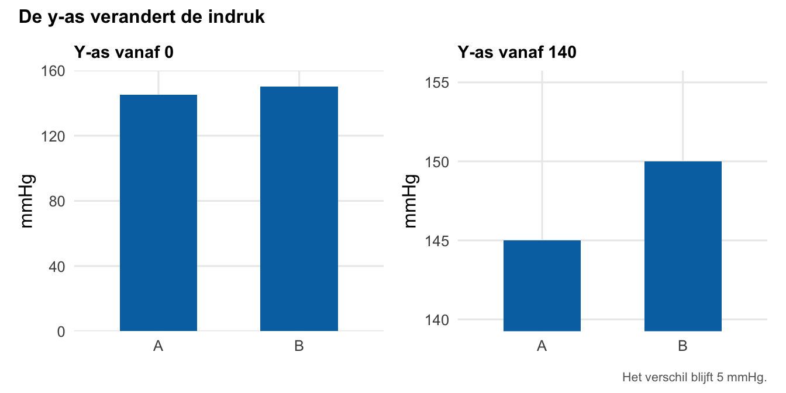
Schaal op de assen
Niet alleen de y-as kan misleiden. Ook de x-as bepaalt welke indruk je krijgt van snelheid of verloop.
Stel dat je een score meet op dag 0, dag 1 en dag 30, met dezelfde daling: 10 → 8 → 6. Zet je die drie momenten op gelijke afstand als categorieën, dan lijken het interval van één dag en dat van 29 dagen even lang. De daling lijkt dan “in twee gelijke stappen” te gebeuren. Teken je dezelfde punten op een as met werkelijke tijd, dan zie je dat bijna de hele daling over een lange periode loopt, en dat de eerste dag slechts een klein stukje is.
Alleen de labels “0”, “1” en “30” lossen dat niet op. Als de plekken op de as even ver uit elkaar liggen, voelt de afstand gelijk, ook al zeggen de cijfers iets anders. Vraag jezelf dus af: staat hier een echte meetschaal, of alleen een rij labels?
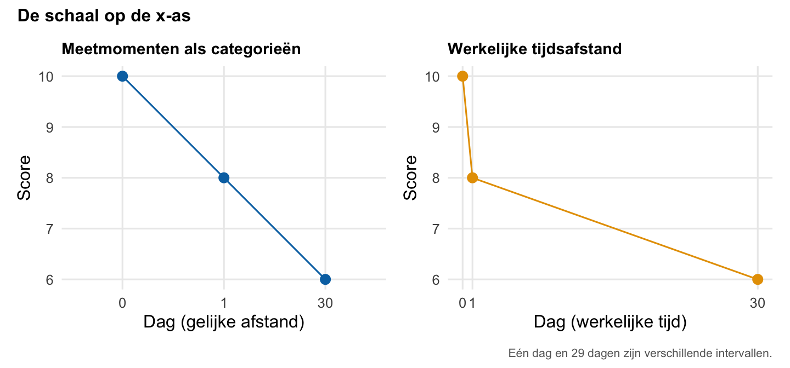
Absoluut en relatief
Hetzelfde verschil kun je op twee manieren opschrijven. Dat verandert niet de getallen, wel de indruk die je ervan krijgt.
Voorbeeld 1: groei over jaren. Stel, een poli telt het aantal nieuwe verwijzingen (fictief):
| Studiejaar | Aantal nieuwe verwijzingen |
|---|---|
| 2020–2021 | 200 |
| 2021–2022 | 250 |
- Absolute groei = nieuw − oud = \(250 - 200 = 50\) verwijzingen. Je houdt de eenheid van de meting.
- Relatieve groei = absolute groei gedeeld door de uitgangswaarde = \(50 / 200 = 0{,}25\), oftewel 25% toename.
Beide zijn juist, maar “+50” klinkt anders dan “+25%”. Zonder de 200 als referentie weet je bij “25% groei” niet of het om tientallen of duizenden gaat.
Voorbeeld 2: risico met en zonder behandeling.
| Gebeurtenissen | Percentage | |
|---|---|---|
| Zonder behandeling | 20 van 1000 | 2% |
| Met behandeling | 10 van 1000 | 1% |
- Absoluut verschil: 10 minder per 1000, oftewel 1 procentpunt (van 2% naar 1%).
- Relatief verschil: \((2 - 1) / 2 = 0{,}50\), oftewel 50% daling ten opzichte van het uitgangsrisico.
Opnieuw zijn beide juist, maar de indruk verschilt. Let op: procentpunten (het absolute verschil tussen twee percentages) zijn niet hetzelfde als procent relatieve verandering. Een daling van 2% naar 1% is 1 procentpunt absoluut en 50% relatief. Dat is niet hetzelfde als “1% relatief”.
Noem daarom altijd de uitgangswaarde (referentie) en de noemer, en bij risico’s ook de tijdsduur. “50% minder” of “25% groei” alleen is te weinig informatie.